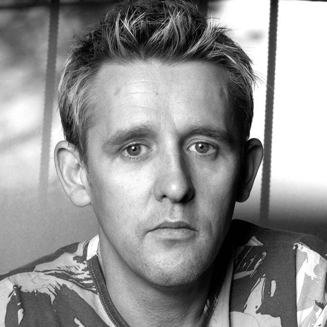

Peewee Ferris [Audio]: Having the Peaktime of his life


STREAMING AUDIO INTERVIEW
Peewee Ferris is a bonafide legend on the Australian dance music scene. The term, which is often bandied about without much though, is entirely justified when it comes to Ferris. The DJ and producer has been on the scene for 20 years, and in that time has achieved a great deal. So much so, that his adopted moniker of ‘Peewee’ seems somewhat ironic when measuring the impact he’s had over electronic music throughout his career.
A long serving resident of Sydney clubnight Sublime (which just celebrated its 11th birthday), Peewee is also a regular visitor interstate and spends most weekend’s playing to packed clubs around the country. He’s was nominated for an ARIA Award for his album ‘Social Narcotic’, with his single ‘I Feel It’ achieving gold sales status and a place in the top 10 chart.
Ferris is also one of the few Australian DJs to secure a position in DJ Mag’s Top 100 Poll, and in the year 2000 was invited to compose the music for the Sydney Olympic Games Opening & Closing Ceremonies. ITM’s Angus Paterson recently caught up with Peewee to talk about his latest mix CD, ‘Peaktime Vol 9’.
Peewee Ferris continues his national launch tour for ‘Peaktime Vol 9’ in July and August. The double CD is out now through Central Station/MRA:
July 29th – Tonic, Sunshine Coast
Aug 3rd – Sublime, Sydney
Aug 4th – Bombay Rock, Townsville
Aug 9th – Venue TBA, Mackay
Aug 10th – Venue TBA, Arlie Beach
Aug 17th – One Nightclub, Albury
Aug 24th – Family, Brisbane
Aug 25th – Earth, Adelaide
Aug 31st – Rise, Perth